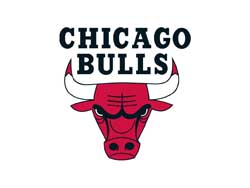

Sports
Chicago Bulls
Chicago holds a lot of sport activities every year. If you are a fan of basketball, we have Chicago Bull holding games in the United Center every NBA season. United Center is located at 1901 w Madison St. You are able to buy tickets from the United Center or online (which is away cheaper such as vividseats.com). Going to United Center is very easy. Take CTA blue line train and get off at Illinois Medical District and then walk another 10 mins. Or you can take taxi or Uber which is faster and more convenient.
Chicago Blackhawks
Chicago Blackhawks is a professional ice hockey team based in Chicago. Blackhawks won the championship of NHL currently. If you like ice hockey, you should go to watch the Blackhawks game. Like Chicago Bull, United Center is Blackhawks’ home court during the NHL season.
Chicago Cubs
The Chicago Cubs is an American professional baseball team based in Chicago. We call that “the north siders”. Cubs won the 2016 national league championship series and 2016 world series. Cubs has game in the Wrigley Field during the season. Wrigley Field is located at 1060 w Addison St, Chicago, 60613. You can take the red line train to the Wrigley Field and get off at Addison station. You can take the taxi or Uber to go there as well. For most of time, to avoid heavy traffic, taking public transportation is easier to get to the field when Cubs holds the home match.
Chicago White Sox
The Chicago White sox is an American professional baseball team based in Chicago we called that “ the south siders”. In 2005, White sox won the 2005 world series, and they have been working hard try to get another world series. White sox has its home match in Guaranteed Rate Field, which is located at 333 w 35th St, Chicago, 60616. You can take the red line and get off at Sox-35th. To watch the matches, tickets can be bought either on-site or online.
Chicago Bears
Football is one of the most popular sports in the Unites States. Chicago Bears is the professional football team based in Chicago. Bears holds home game during the season in Soldier Field, which is in museum campus. There is no train to get there. Thus, you can take buses or taxi. Tickets are sold both in field and online.